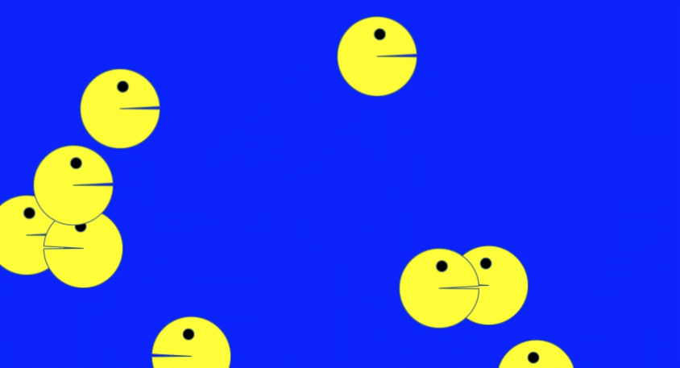
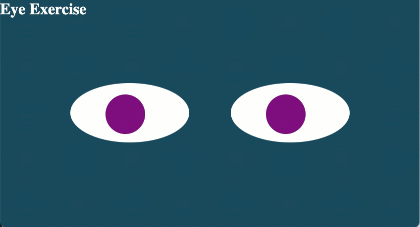
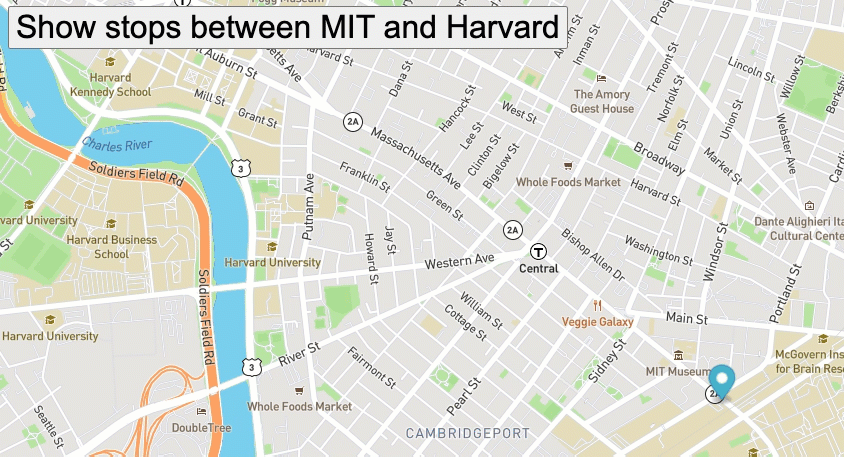

Home
About
Videos
Blog
Projects
Pac-Men Invasion
The Eyes Have It
Boston Bus Tracker
Scott Freiman
Welcome to my home page. Here you can learn more about me and my work.
Technologist • Musician • Educator
Entrepreneur
Pac-Men Invasion

The Pac-Men have invaded! Watch any number of Pac-Men explore their surroundings.
Go to Repository
The Eyes Have It

If it feels like someone is watching you, that's because you're being watched.
Go to Repository
Boston Bus Tracker

Did you miss the bus? You wouldn't if you used this Boston Bus Tracker.
Go to Repository